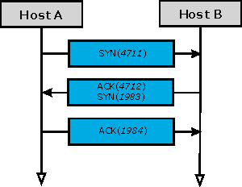
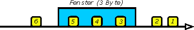
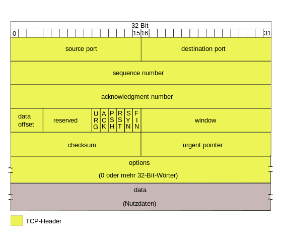
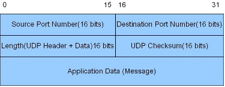

2.3.3 TCP, UDP, SNMP
Auf dem OSI-Layer 4 (transport) können mehrere Protokolle arbeiten, die wohl Bedeutendsten sind TCP und UDP.
TCP (Transmission Control Protocol)
Es wirkt mit dem IP-Protokoll zusammen (TCP/IP) und gewährleistet auch bei größeren Datenmengen über weite Entfernungen einen sicheren Datenstrom, übernimmt also jene Sicherungs- und Ordnungsfunktionen, die das IP-Protokoll nicht zur Verfügung stellt. Angesprochen wird es durch ein Feld im IP-Header als ULP (Upper Layer Protokoll) des IP-Protokolls.
Wir zeigen anhand der Eigenschaften des TCP-Protokolls, wie die geforderten Funktionen umgesetzt werden. Das TCP-Protokoll ist verbindungsorientiert, das heißt, dass für jeden Übertragungsjob eine Verbindung zwischen Sender und Empfänger aufgebaut wird. Umgesetzt wird das über spezielle Bits im TCP-Header der Segmente (Datenpakete auf der Schicht 4):
Zusätzlich wird eine auf dem Host generierte Sequencenumber mitgeschickt, die während der Verbindungssitzung incrementiert wird. Damit läuft der Verbindungsaufbau einer TCP-Verbindung zum Beispiel folgendermaßen ab:

Datenübertragung und Schließen der Verbindung sind analog gestaltet. Die Verbindung selbst ist vollduplex. Mit Hilfe der SYN- und ACK-Bits werden also Quittungen für den korrekten Empfang angefordert bzw. ausgestellt, das Verfahren ist auch als Handshake-Verfahren bekannt. Um den Datenstrom nicht unnötig zu belasten, können auch mehrere solche Bits in ein Segment gepackt werden.
Dem gleichen Ziel dient auch ein Verfahren, das Fenstertechnik genannt wird. Man versteht dabei unter einem Fenster die Anzahl der Bytes, die ohne sofortige Bestätigung abgeschickt werden dürfen. Die Fenstergröße selbst wird zwischen Sender und Empfänger vereinbart und bei Performanceproblemen reduziert. Die extreme Fenstergröße 0 bedeutet, dass erst dann wieder übertragen wird, wenn eine Empfangsbestätigung der bisher gesendeten Bytes eingetroffen ist. Trifft eine solche Bestätigung nicht ein, wird ein neuerlicher Übertragungsversuch unternommen. Das Fenster ist also ein Puffer für gesendete aber noch nicht quittierte Bytes.

Die Grafik illustriert:
Damit kann die Verfahrenstechnik des TCP-Protokolls - grob vereinfacht - beschrieben werden:
Ports
Besondere Erwähnung soll noch die Schnittstelle des TCP-Protokolls und anderer Schicht 4 Protokolle wie UDP mit der darüberliegenden process-application-Schicht finden. Die Schnittstelle ist so gestaltet, dass TCP-Pakete direkt den auf höheren Schichten arbeitenden Prozessen übergeben werden können. Vermittelt wird das durch zwei 8-Bit-Felder im TCP-Header, den sogenannten Ports oder Portnummern (Source Port/Destination Port) Über diese Ports erfolgt der Datenaustausch zwischen TCP und den entsprechenden Anwendungsprozessen, wobei TCP mehrere solche Verbindungen gleichzeitig abarbeiten kann. Diese Eigenschaft wird gelegentlich Multiplexing genannt.
Im Prinzip geschieht die Vergabe von Portnummern an Anwendungsprozesse dynamisch und wahlfrei. Für Standardapplikationen wurden allerdings Portnummern festgelegt, die von der IANA (Internet Assigned Numbers Authority) bzw. InterNIC kontrolliert werden.
Die Konfiguration der Portnummern durch TCP erfolgt auf dem Host - im Grunde automatisiert - nach folgenden Prinzipien:
Die folgende Tabelle listet einige häufig verwendete TCP-Ports auf, andere Schicht 4 Protokolle verwenden eine andere Zuordnung:
| Portnummer | Protokoll |
| 20 | FTP (Daten) |
| 21 | FTP (Steuerung) |
| 22 | Secure Shell |
| 23 | Telnet |
| 25 | SMTP |
| 53 | DNS-Server |
| 70 | Gopher |
| 79 | Finger |
| 80 | HTTP (Proxy-Server) |
| 110 | POP3 |
| 119 | NNTP |
| 143 | IMAP |
| 194 | IRC |
| 210 | WAIS |
| 256 - 1023 | UNIX-spezifische Services |
| 540 | UUCP |
| 1024 - 49151 | Registered Ports |
| 49152 - 65535 | Dynamic / Private Ports |
Eine vollständige Liste der TCP-Portnummern und auch der UDP-Portnummern findet man auf: http://www.iana.org/assignments/port-numbers. Mit Hilfe der Ports ist es also möglich, Nachrichten direkt bestimmten Anwendungsprozessen zuzuweisen. Die Schnittstelle, also das Paar aus IP-Adresse und Portnummer wird gelegentlich auch als Socket bezeichnet. Die Ports selbst können unidirektionale oder bidirektionale Kommunikation gestatten, stellen aber, bei aller Bequemlichkeit, ein enormes Sicherheitsrisiko dar. Bekannt sind in diesem Zusammenhang eingeschleppte Prozesse, die auf einem Port lauschen, also auf das Eintreffen bestimmter Nachrichten warten und die in der Welt der Viren Trojaner heißen. Bei aller gebotenen Vorsicht ist aber wesentlich, dass Prozesse, die für sie bestimmte Nachrichten an den entsprechenden Ports abholen und direkt weiter verarbeiten, für eine störungsfreie Datenverarbeitung unerlässlich sind.
Wir fassen noch einmal die Hauptmerkmale von TCP zusammen:
Der TCP-Header sieht folgendermaßen aus:

UDP (User Datagram Protocol)
Das UDP-Protokoll wirkt wie TCP auf dem OSI-Layer 4 und kommuniziert ebenfalls mit dem IP-Protokoll, ist aber in seinem Funktionsumfang wesentlich eingeschränkt. Es ist ein verbindungsloses Protokoll, das heißt es wird keine Verbindung zwischen Quell- und Zielhost aufgebaut. Es wurde konstruiert, um den Anwendungsprozessen selbst eine Kommunikationsmöglichkeit zu eröffnen, ist bei einer Headerlänge von nur 16 Bit entsprechend schlank, überlässt aber den Anwendungsprozessen die fehlenden Sicherheits- und Ordnungsaufgaben. Es garantiert weder die korrekte Ablieferung der Datagramme noch managt es Datagrammduplikate oder Vertauschungen in der Reihenfolge.
Es gestattet jedoch das Multiplexen von Verbindungen durch UDP-Ports, die analog zu den TCP-Ports Verwendung finden. Auch eine Fehlerbehandlung durch eine Checksum ist implementiert. Der Funktionsumfang ist wohl am Besten ablesbar, wenn man den 4x2 Byte langen Header betrachtet:
Eine vollständige Liste der UDP-Portnummern und auch der TCP-Portnummern findet man auf: http://www.iana.org/assignments/port-numbers
Der wesentlich kleinere UDP-Header sieht folgendermaßen aus:

SNMP (simple network management protocol)
Das Protokoll unterstützt zentrales Netzwerkmanagement indem es Netzwerkereignisse (Traps) aufzeichnet. Es unterscheidet Netzwerkmanagement-Stationen (NMS) wie Router, Host, Bridge oder Terminal-Server, die Anwendungen zur Überwachung und Steuerung ausführen, und die Netzwerkkomponenten. Über SNMP wird nun eine Kommunikation aufgebaut, bei der relevante Netzwerkdaten gesammelt und in einer MIB (Manager Information Base) auf der NMS gespeichert werden. Beispiele solcher Informationen sind Netzwerk-Adressen, physikalische Adressen, Timer, Zähler und Protokollparameter.
SNMP wird automatisch mit TCP/IP geladen und
in INETCFG.NLM konfiguriert.
|
|